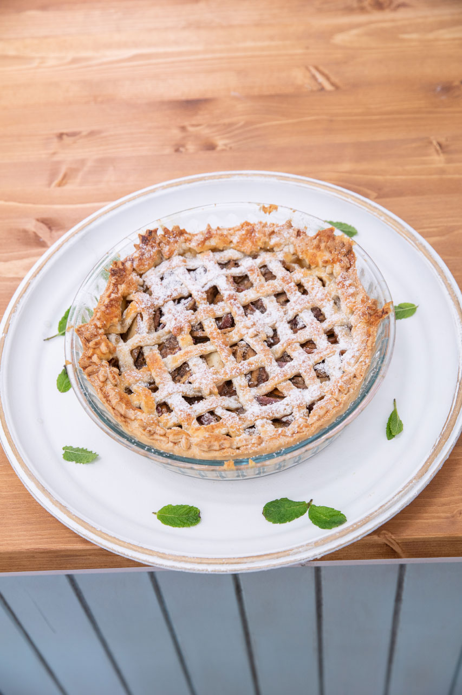
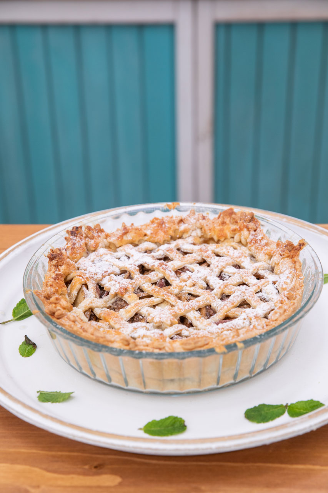
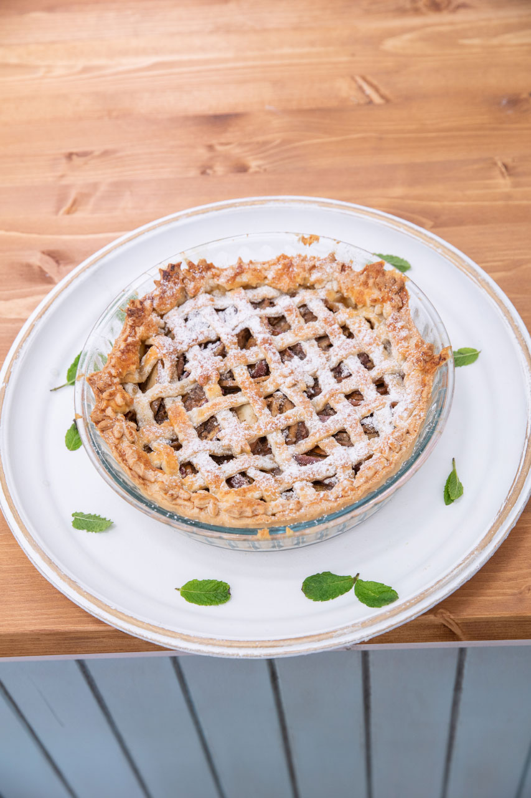
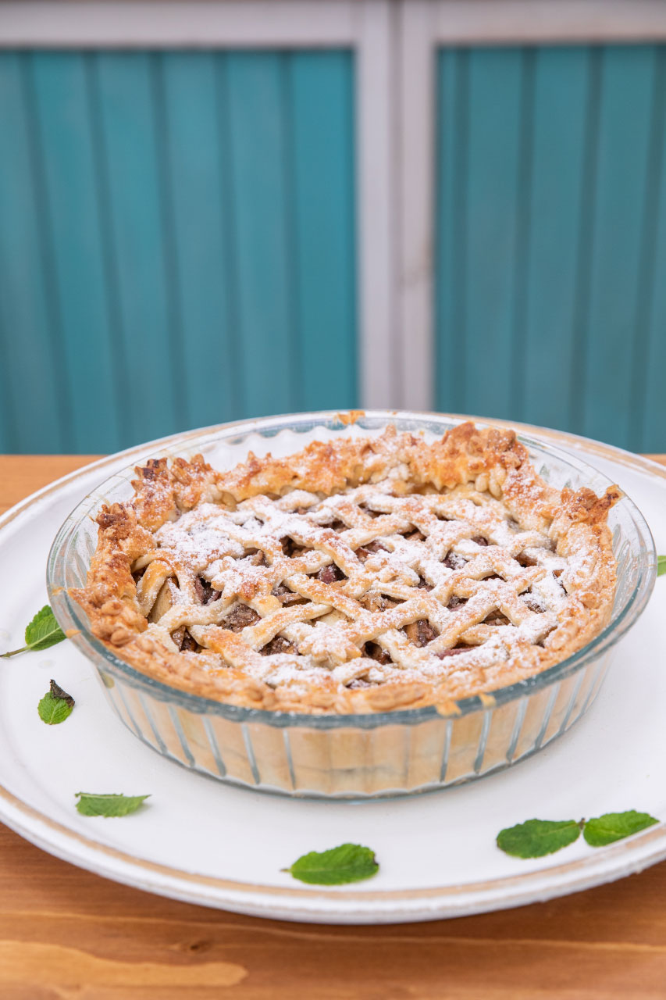

„Tenhle recept mě asi dostal do této soutěže. Takže nostalgie. Linecké koláče se pekly u nás doma s jablky a skořicí. Ale tento je vylepšený o koření chai, které je prostě bezkonkurenční.”
Těsto
450 g hladké mouky
2 lžíce krupicového cukru
1/3 lžičky soli
240 g másla (vychlazeného a nakrájeného na malé kostičky + na vymazání formy)
1 lžíce citronové šťávy
1 velké vejce
Mouku, cukr a sůl dáme do robotu s noži a krátce promixujeme, aby se přísady promísily. Přidáme máslo a několika pulzy propracujeme, aby vznikla jemná drobenka. Pak přilijeme 90 ml ledové vody a citronové šťávy, přidáme vejce a hněteme, až vznikne soudržné těsto. Pozor, těsto nemá rádo teplo lidských dlaní. Propracujte jen lehce a rychle.
Těsto rozdělíme na poloviny, zabalíme do potravinářské fólie a nejméně na 30 minut dáme do lednice.
Náplň
3 jablka
2 hrušky
3 lžíce citronové šťávy
3 až 4 lžičky kořenící směsi chai
3 lžíce javorového sirupu
50 g krupicového cukru (podle kyselosti jablek)
40 g kukuřičného škrobu
Jablka a hrušky oloupeme a nakrájíme na tenčí plátky. Pokapeme citronovou šťávou, přidáme koření, javorový sirup, cukr a škrob a promícháme.
Chai směs
1 lžička fenyklových semínek
semínka z 10 tobolek kardamomu
10 hřebíčků
1 skořicový svitek
8 kuliček černého pepře
1 lžíce sypaného černého čaje
semínka z 1 vanilkového lusku
1/2 lžičky mletého zázvoru
badyán
špetka strouhaného muškátového oříšku
Vše semeleme dohromady.
Chai koření posouvá tento koláč směrem na východ Indie, odkud koření pochází. Zkuste si jej sami doma „utlouct“ a zbytek nevyužitého koření použít třeba do caffé latté.
Dokončení
70 g mletých vlašských ořechů
1 prošlehané vejce na potření koláče
1 až 2 lžíce třtinového cukru na posypání
Rozválíme těsto na 2 pláty. Dáme do kulaté koláčové formy, na dno rozprostřeme mleté ořechy, naplníme ovocem a přikryjeme. Povrch ozdobíme, potřeme vejcem a posypeme cukrem.
Pečeme ve vyhřáté troubě na cca 180 °C asi hodinu, dokud těsto není zlaté.
 
